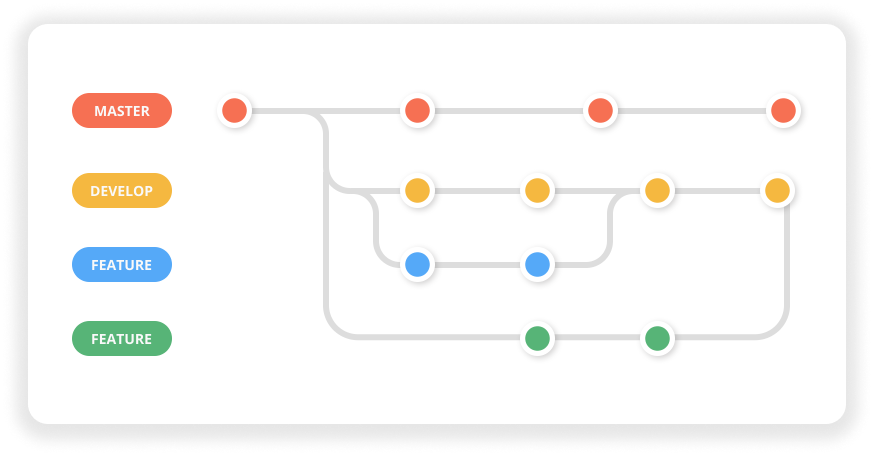

What is Git?
Version control, also known as source control, is the practice of tracking and managing
changes to software code. Version control systems are software tools that help software
teams manage changes to source code over time. By far, the most widely used modern
version control system in the world today is Git. Git is a mature, actively maintained
open source project originally developed in 2005 by Linus Torvalds, the famous creator of
the Linux operating system kernel.
READ MORE

Why do developers need Git?
Git is all about efficiency. For developers, it eliminates everything from the time
wasted passing commits over a network connection to the man hours required to integrate
changes in a centralized version control system. It even makes better use of junior
developers by giving them a safe environment to work in. All of this affects the bottom
line of your engineering department.
READ MORE

What is a branch in Git?
Git branches are effectively a pointer to a snapshot of your changes. When you want to
add a new feature or fix a bug—no matter how big or how small—you spawn a new branch to
encapsulate your changes. This makes it harder for unstable code to get merged into the
main code base, and it gives you the chance to clean up your future's history before
merging it into the main branch.
READ MORE